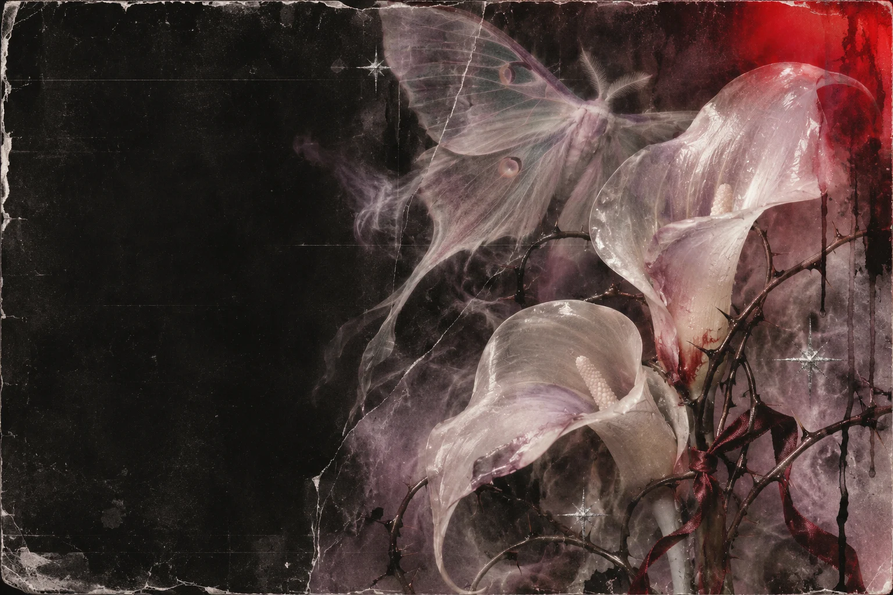
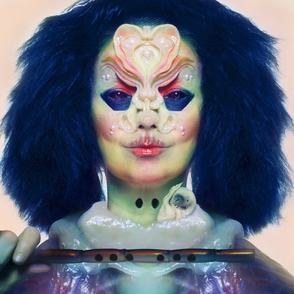
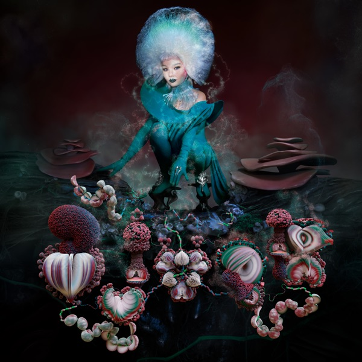

♡ DE ALASKA, PRA GARDEN. SEM FILTRO.
O LADO B
DO MEU
peito.
Kaio, tem umas coisas aqui dentro que eu não sei cantar.
Fiz este lugar pra você poder ouvir mesmo assim.
TEM UMA COISA QUE EU QUERIA TE DIZER
Se eu te emprestasse meus olhos,
você ia entender.
Você não tem ideia do que acontece comigo quando penso em você.
Eu queria conseguir te mostrar. De verdade.
Então fui deixando um pouco aqui.
EU FUI DEIXANDO AMOR POR AQUI
Eu guardei tudo isso pra você.
Lê. Eu pensei em você.
Tem verso aqui que me desmonta.

LADO B / BJÖRK, ÓBVIOÉ claro que ia ter Björk.
Eu sei. Essa parte tinha que existir.
Fica mais um pouquinho.
Fiz umas coisas pra gente brincar.
Me mostra o que você ouve.
Quero conhecer essas partes de você.
ESSE AQUI ME PEGOU

DÁ PLAY. PENSA EM MIM UM POUQUINHO.ESSA TINHA QUE ESTAR AQUI
All is full
of love.
Fico imaginando você ouvindo. Queria estar perto, só pra ver a tua cara naquela parte da música que você mais gosta.
Vem ouvir Björk ↗EU DEIXEI ISSO AQUI PRA VOCÊ ACOMPANHAR
Saiu coisa da Björk.
Buscando notícias da Björk…
Visitar o site oficial da Björk ↗Eu podia escrever a noite inteira.
Ainda ia faltar.
TEM COISA QUE EU SÓ CONSIGO DIZER ASSIM
Eu leio isso
e só penso em você.
Alguns versos são de gente que já sentiu coisas enormes.
Outros estão aqui porque eu precisava te dizer.
Eu escondi mais umas coisas.
Queria que você encontrasse sem esperar.
EU SEI O QUANTO VOCÊ AMA
Essa parte
é muito você.
Eu podia deixar só uma música. Mas era pra você.
Então, bem… deixei um pouco mais.
Qual desses você colocaria agora?
Eu quero ouvir com você.Capas e links de escuta: Apple Music. Uma seleção afetiva, não a discografia completa.
PRA VOCÊ FICAR POR DENTRO
Novidades dela.
Buscando notícias da Björk…
Manchetes de fontes externas via Google Notícias. Uma nova edição é preparada automaticamente a cada 6 horas. A página procura novas edições ao abrir e a cada 15 minutos.
ESSA PARTE É SÓ PRA TE VER SORRIR
Vem cá.
Brinca comigo.
Quero ver quantas você acerta sobre a Björk.
E depois você faz uma música pra mim?
Olha o tanto que você já encontrou.
As sementes e os segredos ficam guardados neste navegador.
EU GOSTO DE TE IMAGINAR OUVINDO
Me conta.
O que você tá ouvindo?
Escreve um nome aqui. Eu quero que você encontre
uma coisa que ainda não sabia sobre quem você ama ouvir.
Eu queria dividir o fone com você.
Enquanto isso, escolhe quem você quer ouvir.